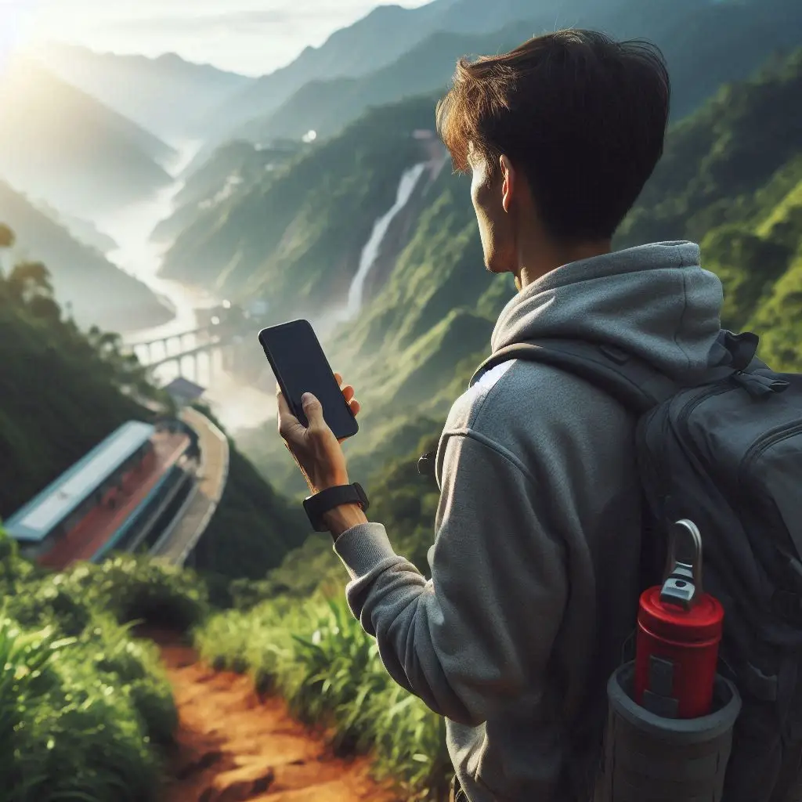

Explore with Confidence: Offline GPS Navigation for Hikers and Outdoor Enthusiasts
The allure of the great outdoors is undeniable. Whether you’re a seasoned hiker, a weekend warrior, or simply someone who enjoys escaping the city for a dose of nature, there’s nothing quite like venturing off the beaten path.
But with exploration comes the risk of getting lost. Poor cell service, unmarked trails, and unpredictable terrain can make it challenging to find your way, especially in remote areas.
That’s where GPS Navigation for iPhone comes in. This powerful app is a must-have for hikers and outdoor enthusiasts, offering reliable navigation capabilities, even when you’re off the grid.
Your Offline Navigation Companion
Unlike many other navigation apps that rely on a constant internet connection, GPS Navigation for iPhone works seamlessly offline. This means you can:
- Mark Trails and Waypoints: Save the starting point of your hike, mark interesting landmarks along the way, and pinpoint the location of your campsite.
- Navigate with Confidence: A clear directional arrow and distance reading will guide you towards your saved locations, ensuring you stay on track.
- Explore Without Limits: Venture deep into the wilderness without fear of losing your way. GPS Navigation for iPhone provides a sense of security, allowing you to focus on enjoying the beauty of your surroundings.
My Experience with GPS Navigation for iPhone
I recently used GPS Navigation for iPhone on a hiking trip in the Scottish Highlands. The trails were poorly marked, and cell service was non-existent. I used the app to mark the trailhead and several key points along the way. When a sudden fog rolled in, reducing visibility to near zero, I was incredibly grateful for the app’s clear directional arrow, which guided me safely back to the trailhead. It truly provided peace of mind in a potentially challenging situation.

Essential Features for Outdoor Adventures
- Pinpoint Accuracy: Leverages your iPhone’s GPS technology to provide precise location data.
- Simple Interface: Easy-to-use design with a clear directional arrow and distance readings.
- Offline Functionality: Works seamlessly without an internet connection, crucial for remote areas.
- Customizable Locations: Save locations with personalized names and icons for easy identification.
- Apple Watch Integration: Access key features and navigation information on your wrist.
More Than Just a Hiking App
While it excels in the wilderness, GPS Navigation for iPhone is also a valuable tool for a variety of outdoor activities:
- Camping: Mark your campsite, water sources, and nearby trails.
- Fishing: Save the location of your favorite fishing spots.
- Hunting: Track your movements and mark areas of interest.
- Foraging: Pinpoint the location of mushroom patches or berry bushes.
- Geocaching: Navigate to geocache locations with precision.
Embrace the Freedom of Offline Exploration
With GPS Navigation for iPhone, you can confidently explore the great outdoors, knowing you have a reliable navigation tool at your fingertips.
Download GPS Navigation for iPhone from the App Store and experience the freedom of offline exploration.
Keywords: GPS Navigation for iPhone, hiking app, offline navigation, outdoor navigation, hiking GPS, trail marking, find my way, wilderness navigation, camping app, fishing app, hunting app, foraging app, geocaching app